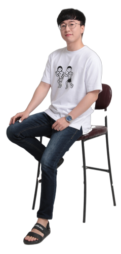

95 %
" Who are you? "
- 이동훈 (Lee Dong Hoon)
- 010-5298-2401
- 1994년 08월 28일
- ehdgns8052@naver.com
- 한국아이티인재개발원
- 멀티디바이스 과정 960시간 수료
- CS 경력 2년
- 서울시 금천구 거주
" What is your advantage? "
- 나는 아직 부족하다, 끝없는 성장 욕구
- 시간 약속은 철저한 개근왕
- 둥글둥글한 성격으로 원만한 대인관계
- 포기할줄 모르는 끈기
- 맡은 일은 꼭 하는 성실함
- 상대방의 기준에서 생각하는 배려심
- 몰입감이 느껴지는 집중력
- 수동적 NO! 항상 능동적으로!
- CS 경력으로 몸에 배인 친절함
- 쉽게 무너지지 않는 강한 정신력
" What is your level? "

90 %
60 %
60 %
80 %
80 %
85 %
HYBRID APP
잊을만 하면 찾아오는 기념일, 내가 챙겨줄게!
다음 주 수요일 무슨 날인지 알지? 기대하고 있을게~
100일? 1년? 생일! 기념일은
연애의 필수 사항!
이제는 '이랑' 를 통해
기념일을 사수하세요!
- 8.0+
- 2.1+
- 3.5+
- 3.1+
- 9.0+
Concept
평소에 영어에 관심이 있어 튜터링이란 어플을 이용해볼까 했던적이 있어 두번째 J-Query 페이지로 고르게 되었다. 기존 페이지와 달리 메인 페이지에 수강권에 대한 내용, 수강생들의 생생한 리얼 후기, 미리 체험하기 등 컨텐츠 배치하여 튜터링을 이용하면 당신도 영어를 잘할 수 있다! 라는 느낌을 심어주었다. 더불어 구매 시 혜택 등을 나타내어 구매 욕구를 불러오도록 하였다.
UX & UI
기존 튜터링 페이지 같은 경우 페이지가 길어 스크롤을 많이 내리면 다시 올라오기 힘들었다. 메뉴 좌측에 즐겨찾기 메뉴를 만들어 페이지 어디에서도 이동할 수 있게 만들었다. 구매하기 전, 영어 컨텐츠를 조금 체험할 수 있도록 클릭 시 이벤트를 설정해두었고, 주된 목적이 수강 등록인만큼, 수강생들의 후기나 판매 상품, 구매 혜택 등을 다양한 모습들로 디자인하여 배치하였다.
Epilogue
콘텐츠 디자인에 대한 개념이 잡혀가면서 '과연 이 J-Query 효과가 이 콘텐츠에 맞는 효과일까?' 라는 고민을 우선 적으로 하게 되었다. 각 콘텐츠와 잘 어우러지는 J-Query 효과를 주기 위해 많은 고민과 연구를 하며 제작한 홈페이지이다. 두번째 제이쿼리 작품이기에 처음보다는 J-Query에 대한 이해도가 높아졌고 많은 공부를 할 수 있었다.
- 8.0+
- 2.1+
- 3.5+
- 3.1+
- 9.0+


Concept
화면이 작은 상태에서는 수강권이나 수강 후기, 교육 컨텐츠 등을 최대한 볼 수 있도록 배치하였다. 큰 화면에서의 메뉴는 작은 화면에서 보기 어렵기에 햄버거 메뉴를 만들어 보기 쉽게 하여 사용자를 배려하였다. 작은 화면에서 보기 어려운 컨텐츠들은 작은 화면에 맞는 이미지&컨텐츠로 대체하여 볼 수 있도록 설정하여 크기가 작아져도 최대한 많은 컨텐츠를 볼 수 있게 배치하였다.
UX & UI
반응형 웹에서 가장 중요한 X-scroll이 생기지 않게 하기 위해 많은 시간을 투자하였다. 단계 단계 Mediaquery를 사용하여 해상도(1280px이상)부터 해상도(480px)까지 꼼꼼히 설계, 디자인하여 어떤 크기의 화면에서도 레이아웃이 무너지지 않는 견고한 반응형 웹 홈페이지를 제작하였다.
Epilogue
조금의 오차만 생겨도 레이아웃이 쉽게 무너져버리고 마는 반응형 웹의 특성으로 인해 사이트를 제작하면서 많은 시행착오를 겪었다. 하지만 그 과정들을 겪고 나니 반응형 웹에 대한 이해도가 훨씬 높아졌고 기획하였던대로 레이아웃을 잡고 컨텐츠를 포함해가면서 점차 내가 원했던 홈페이지의 모습을 갖추어가는 모습을 보았을 때 큰 흥미로움을 느꼈다. 컨셉이 뚜렷한 만큼 튜터링이란 색을 나타내는데 집중하였다.
- 8.0+
- 2.1+
- 3.5+
- 3.1+
- 9.0+
Concept
로그인, 회원가입, 게시판 등 서브 페이지는 메인 페이지와 비슷한 색을 사용하여 위화감을 갖지 않게 하였다. 중요 컨텐츠만 있도록 깔끔하게 디자인하였고, 버튼색은 튜터링의 메인색인 연보라를 사용하여 색감을 맞추었다.
Epilogue
JSP를 마무리하고 PHP를 시작하니, 훨씬 쉽게 느껴졌다. 그렇다고 PHP가 어렵지 않은 것은 아니었다. 데이터베이스를 연결하여 사용하는 부분이 많이 어려웠지만, 어려울수록 알아가는 재미가 분명 있었다. 데이터베이스를 연결하는 부분이나, 글을 실시간으로 작성, 수정할 수 있게 소스를 보고 수정하면서 많은 재미를 느끼게 된 언어였다. PHP는 무언가 더 공부해서 잘 다루고 싶게 하는 욕심을 부른다.
J-QUERY3
- 9.0+
- 2.1+
- 3.5+
- 3.1+
- 9.0+

Concept
강한 인상을 남기는 본죽 계열의 색상 와인 컬러를 사용하였다. 신 메뉴, 대표 메뉴 등을 스크롤을 내릴 때 슬라이드 형식으로 나오게하여 관심을 갖게 하였다. Swipe 플러그인을 사용하여 이미지를 드래그로 넘길 수 있게 하여 사용자에게 편리함을 주었다. 자주 찾는 메뉴는 퀵바로 두고 계속 따라다녀 언제든 페이지를 이동할 수 있게 하였다.
UX & UI
자주 찾는 메뉴는 퀵바로 두어 편리함을 주었고, 새로 출시된 메뉴에 관심갖게 하기 위해 스크롤을 내릴 때 새로운 메뉴와 대표 메뉴가 애니메이션 되게끔 배치하였다. 이미지 슬라이드로 인기있는 매장을 배치하여 사용자가 보기 편하게 하였다.
Epilogue
이 작품을 할 때 처음으로 스크롤 이벤트를 사용하였다. 페이지에 나오지 않았다가, 스크롤이 특정 값이 되었을 때 애니메이션이 되게 하는 게 굉장히 새로웠다. 스크롤 이벤트는 자주 만나는 친구가 될 것 같다. 더불어 Swipe라는 플러그인도 처음 사용하였다. 아쉽게도 익스플로러 9버전 이하에서는 동작되지 않지만, 드래그하여 움직일 수 있는 점이 꽤나 마음에 들었다.
#EPILOGUE
Thanks for..
- 언제나 리더처럼 이끌어주고, 다 함께 으쌰으쌰 할 수 있게 항상 분위기를 이끌어주고 콩 한쪽도 절대 혼자 먹지 않고 다 같이 나눠 챙겨주는 정말 고마운경아누나, 항상 고마워요 ㅋㅋ 항상 평석이 형과 같이 다니는 ㅋㅋㅋ 단짝 커플(?)이자 츤츤한 키다리 연표, 항상 너무 꼼꼼하고 뭐가 됐든 열심히 집중해서 하는 모습을 내 앞자리에서 보여줘서 나에게까지 열정이 미치게 하는 푸릇푸릇한 머리의 소유자 채은, 교육 첫 날, 옆자리에 있어서 내가 모르는 걸 많이 물어봤는데, 귀찮은 내색 하나도 없이 친절하게 이해될 때까지 알려주는 우리반 1등 스마트 성수, 고생했따 ㅋㅋㅋ 언제나 밝은 모습과 쉬는 시간 짜라빠빠를 틀어주는 다선누나, 대머리 PPT 쩔었어요...꼭 개발해줘요 머머리 탈출법! ㅋㅋ 교육 초반부터 스파르타식 이왕 도전하는 거 제일 어려운 거 도전하겠다! 범식형, 그 도전 정신 본 받고 싶습니다. ㅋㅋ 디자인 1도 모르는 나에게 디자인 스킬 전수시켜주고, 웃음이 많은 짝꿍지은이, 너의 웃음 소리가 머리에서 울린다..ㅋㅋ 다른 짝꿍 자현이! 중독성있는 자현체, 제가요...? 휴먼 자현체~ ㅋㅋ날씨 엄청 더울 때 나는 선풍기가 없었고 너는 선풍기가 있었지...자현 선풍기야 고마워! ㅋㅋ 다음은 우리의 조장 구슬동자 평석형! 항상 위트 넘치고 유머러스하고 옆에 있으면 사운드가 아주 꽉꽉 차는 게 형이 없으면 허전할 정도야. 교육 첫 날 짝꿍에서 교육이 끝난 지금까지 같은 조인 코딩 메이트, 항상 고맙소~ 심각한 동안 초희 누나, 평석이형이랑 나이가 같다고 했을 때 난 제 귀를 의심했어요...불로초를 먹은 것 같은 동안 외모! 저도 동안 비법 알려주세요..ㅎㅎㅎ....반의 또 다른 분위기 메이커 태효, 태희와 태효를 넘나드는 너, 너랑 같이 있을 때는 항상 웃음이 가득하다ㅋㅋ 석기시대 휴대폰 쓴다고 한 거 마음에 담아두지 말고!ㅎㅎㅎ 항상 열심히 하시는 상아누나, 초희누나 못지않게 동안이셔서 놀랬어요. ㅋㅋ 2조는 다 동안인가봐...태효 뺴...ㄱ...ㅋㅋㅋ자바의 신 수빈, 1을 알려주면 10을 가지고 오는 스마트한, 빠른 이해력과 습득력 훔치고 싶어~ ㅋㅋ 마지막으로 5의 왕국의 오윤석 교수님, 처음에 교육 들을 때 혹시나 혼자만 이해하지 못 하는 부분이 생겨 수업 진도를 못 따라가면 어쩌나 고민을 많이 했는데, 그 고민을 바로 사라지게 해주셨어요. 모르는 게 있으면 학생 한명 한명 모두가 이해할 때까지 여러차례 설명해주시고, 작품 하나하나 꼼꼼하게 컨펌해주시고 가르쳐주신 덕분에 div도 모르던 제가 이렇게 포트폴리오까지 완성할 수 있게 되었네요. 정말 진심으로 감사합니다! 꼭 성공할게요!! 180일 과정동안 다들 너무 감사했습니다!
Thank You for Visiting

LEE DONG HOON
010 - 5298 - 2401
Copyright© Hoon's Portfolio 2019. All rights reserved.